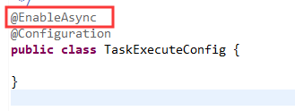
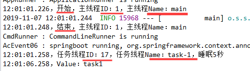

原文连接:https://www.cnblogs.com/lixinjie/p/playing-springboot-009.html
同步代码写起来简单，但就是怕遇到耗时操作，会影响效率和吞吐量。
此时异步代码才是王者，但涉及多线程和线程池，以及异步结果的获取，写起来颇为麻烦。
不过在遇到SpringBoot异步任务时，这个问题就不存在了。因为Spring家族是最替用户考虑的。
结果就是，像同步一样简单，像异步一样强大。
众所熟悉的同步代码
先准备一些代码，为了模拟耗时操作，在其中加入线程睡眠语句。
同时打印出运行这些代码的线程信息。如下图01：
其中一个是没有返回值的，一个是有返回值的。
然后把它注入到另一个类里进行调用，在调用时也输出一下主线程信息。如下图02：
下面是输出结果，如下图03：
可以看到这些代码运行在主线程中，所以这些代码的耗时操作会影响主线程。
首选的方案就是把耗时操作放入另一个线程中执行（通常称为工作线程），把主线程解放出来。
同步代码的异步化改造
由于SpringBoot已经帮我们做好了一切，只需按要求改造即可，只需两步，真的是非常简单。
第一步，引入启用异步任务的注解，@EnableAsync，如下图04：

第二步，在原来的方法上标上@Async注解，如下图05：
这就好了，然后像普通方法一样调用，如下图06：
看下输出结果，如下图07：

可以看到主线程的id是1，而且瞬间执行完。任务在另一个线程id为17的线程中执行，且等耗时操作执行完后才结束。
代码完全不变，只需加两个注解，同步立马变成异步啦。简直爽歪歪了。
主要是因为这个方法没有返回值，如果有的话，只需改下返回类型即可。
SpringBoot一共支持三种返回类型，来逐一看下。
第一种，返回类型为Java的Future<?>，如下图08：
熟悉Java多线程的朋友对这个类都应该不陌生。为了代码能正常编译，在方法最后需要return一个这样的类型。
在同步代码中，我们原来return的是一个Object类型，显然不满足需求，所以SpringBoot就想了一个办法。
新增了一个类，AsyncResult，使用它进行类型适配，这也是此类的主要作用，保证编译通过。
这个类就像一个“类型”占位符一样，如果你真正了解Java多线程的话就会明白，否则绝对不明白。
然后就像普通方法调用一样调用它，接着通过while循环等待异步任务完成后，输出返回结果。
注意，我特意输出了一下方法调用返回的future变量，如下图09：
输出结果如下图10：
可以看到任务是在线程id为17的线程中执行，主线程不断睡眠等待，直到任务完成后才获取到任务的返回结果。
重要时刻来临，可以看到我们输出的future变量类型是Java的FutureTask类，而我们实际在代码中return的是Spring的AsyncResult类。
是不是很奇怪呢？其实一点都不怪，这和Java多线程有关，如果还不明白的话，后面有说明。
第二种，返回类型为Spring的ListenableFuture<?>，如下图11：

可以看到代码在return的时候写法是一样的，那这个类型的好处是什么呢？答案是可以注册回调。
有了回调，任务在完成后会自动执行回调代码，所以主线程就不用等了。
因此在调用时要注册回调代码，包括成功回调和失败回调，如下图12：
注意，我们同样打印一下方法返回变量listenableFuture的类型。
输出结果如下图13：
可以看到此时主线程瞬间执行完毕。任务在线程id为17的线程中执行，完成后执行了回调，且在同一个线程中。
同样变量listenableFuture的类型是Spring的ListenableFutureTask类，并不是我们在代码里return的AsyncResult类。
第三种，返回类型为Java的CompletableFuture<?>，如下图14：
这个类型是Java 8新增的，可以对异步任务进行特殊的操作。
然后进行调用，同样输出下返回变量类型，如下图15：
输出结果如下图16：
输出内容很容易看懂。重点看下返回变量的类型，它就是Java的CompletableFuture<?>类。
那我们在代码中return的是什么类型呢？如下图17：
可以看到和真实调用时返回的还是不一样。如果还不明白，下面来说明下。
Spring在遇到标有@Async的方法时会生成代理，代理做的事情就是把该方法包装成一个任务submit到线程池中。
在submit的时候会返回真正的返回值，就是上面我们在调用方法时输出的。
而我们在写@Async方法代码时return的是一个类似类型占位符的类，它的一个作用就是保证编译通过。
另一个作用就是传递返回值，在任务执行完成时，把值往外层传递。
线程池的个性化按需配置
对于Java来说，几乎所有的异步执行代码都是提交到线程池中来执行的，因为线程池可以管理好线程，我们就不用操心了。
不过我们依然可以对线程池进行配置，如核心线程数、最大线程数、内部队列长度等等。
SpringBoot当然也支持这些配置，按照惯例，这些配置也是放在application.yml配置文件中的。
一些IDE是可以进行自动提示的，如下图18：
这些配置的前缀是spring.task.execution，主要包括三类配置，线程池中线程的数目和队列的大小，线程池关闭时的行为，线程名称的前缀。
有求知欲的朋友可能会寻思，这些配置究竟是如何生效的呢？下面就来满足一下好奇心，其实很简单。
SpringBoot的特性之一就是自动配置，这些自动配置代码都位于这个jar包中，如下图19：

这个jar包名称很容易记住，所以最好都能记住，下次有疑问自己就可以去找了。
我们在这个jar包里寻找和任务（task）相关的包名称，如下图20：
前两个类是和任务执行相关的，其中以Properties结尾的类是用于存放application.yml里面的配置的。
以AutoConfiguration结尾的类是用于自动配置的，主要是bean定义的注册。
这种写法是SpringBoot自动配置的标准模式，可以看看其它的，都是这样的。
看下TaskExecutionProperties类，如下图21：
指定好前缀后，配置文件中的配置项和类中的属性完全是一一对应的，而且类中属性可以有默认值，这样配置文件中没有配置时就使用默认值。
再来看下TaskExecutionAutoConfiguration类，这里面就注册了两个bean，如下图22：
首先使用刚刚的属性注册一个TaskExecutorBuilder类型的bean，然后再使用它注册一个ThreadPoolTaskExecutor类型的bean。
其实异步任务执行主要是要找到一个线程池的bean，来完成任务的提交，具体寻找逻辑的如下：
1）如果容器中存在唯一一个TaskExecutor类型的bean，那就用它。否则继续往下。
2）如果容器中存在一个名称为taskExecutor且类型为Executor的bean，就用它，否则继续往下。
3）将使用SimpleAsyncTaskExecutor类进行异步方法调用。
void异步方法的异常处理
需要注意的是，返回类型为void的异步方法，将不会向调用者传递异常。默认情况下，这些未捕获的异常仅仅输出一下日志。
所以对于void方法一定要自己处理好异常。如果恰巧没处理好，怎么办呢？不要着急。
SpringBoot提供了统一的未捕获异常处理方式，只要实现一个接口即可，如下图23：
我们可以获取到抛出的异常，还有抛出异常时执行的异步方法，还有调用该异步方法时传入的参数。
那么，对于有返回值的异步方法，则本身可以传递异常，所以不会使用这种方式。这一点需注意。
作者寄语
异步方法的原理很简单，就是在单独的线程中执行一个方法或代码片段。
不过有两方面需要注意，技术方面和业务方面：
技术方面：
1）如何获取异步方法的返回值
2）如何处理异步方法产生的异常
3）如何处理异步方法超时的问题
业务方面:
1）异步方法执行成功时对业务的影响
2）异步方法抛出异常时对业务的影响
3）异步方法执行超时时对业务的影响
（END）
>>> 玩转SpringBoot系列文章 <<<
【玩转SpringBoot】用好条件相关注解，开启自动配置之门
【玩转SpringBoot】看似复杂的Environment其实很简单
【玩转SpringBoot】让错误处理重新由web服务器接管
【玩转SpringBoot】SpringBoot应用的启动过程一览表
【玩转SpringBoot】通过事件机制参与SpringBoot应用的启动过程
>>> 品Spring系列文章 <<<
品Spring：SpringBoot和Spring到底有没有本质的不同？
品Spring：SpringBoot轻松取胜bean定义注册的“第一阶段”
品Spring：SpringBoot发起bean定义注册的“二次攻坚战”
品Spring：注解之王@Configuration和它的一众“小弟们”
品Spring：对@PostConstruct和@PreDestroy注解的处理方法
品Spring：对@Autowired和@Value注解的处理方法
品Spring：真没想到，三十步才能完成一个bean实例的创建
品Spring：关于@Scheduled定时任务的思考与探索，结果尴尬了
>>> 热门文章集锦 <<<
爸爸又给Spring MVC生了个弟弟叫Spring WebFlux
【面试】吃透了这些Redis知识点，面试官一定觉得你很NB（干货 | 建议珍藏）
【面试】如果你这样回答“什么是线程安全”，面试官都会对你刮目相看（建议珍藏）
【面试】迄今为止把同步/异步/阻塞/非阻塞/BIO/NIO/AIO讲的这么清楚的好文章（快快珍藏）
【面试】一篇文章帮你彻底搞清楚“I/O多路复用”和“异步I/O”的前世今生（深度好文，建议珍藏）
作者是工作超过10年的码农，现在任架构师。喜欢研究技术，崇尚简单快乐。追求以通俗易懂的语言解说技术，希望所有的读者都能看懂并记住。